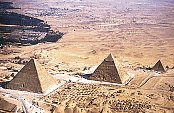
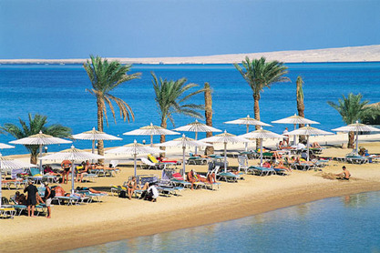
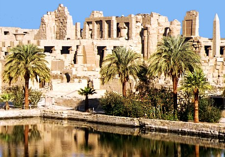

Egyiptom
Kairó, az egyiptomi utazások kezdete és vége
Kairó, Egyiptom fővárosa és egyúttal Afrika legnagyobb városa. A Nílus mentén fekszik ott, ahol a folyó sok mellékágra válik szét, melyek a Földközi-tengerbe torkollanak. Kairó lüktető amellett, hogy élethű metropolisz egyben az ezer éves arab kultúra hagyományinak letéteményese is.
Az égbe szökő modern felhőkarcolók tövébe meg nem álló kereskedők árulják színes portékáikat. Kairó bizonnyal okkal leglátogatottabb nevezetessége a közeli Gíza. Itt található a világ hét csodájának egyike, a gigászi méretű és rejtélyes piramisok - a Kheopsz, Chefren és Mükerin piramis. Közülük a legnagyobb a több mint 140 méter magas Kheopsz piramis. Ennek az építménynek különlegessége, hogy alaprajza pontosan a négy égtáj felé mutat.
Egyiptom meseszép fürdőhelye: Hurghada
Hurghada a Vörös-tenger partján fekszik mintegy 500 km-re Kairótól. A Vörös-tenger az Indiai-óceán beltengere, nevét egy különleges, a tenger alját vörösre festő tengeri moszat előfordulásának köszönheti. Hurghada egész évben különlegesen jó feltételeket biztosít a fürdéshez. A tenger vizének hőmérséklete ritkán csökken 22 C° alá. Hurghadánál a kristálytiszta tengert finom homokkal borított hosszú strandok szegélyezik.
Sok helyen nyúlnak a tengerbe korallzátonyok, melyek víz alatti szépsége elkápráztatja a búvárkodás szerelmeseit. Azok számára, akik ennek a sportnak nem hódolnak, tengeralattjárók és üvegfenekű hajók engednek bepillantást a víz alatti világba. A Vörös-tenger híres szép korallzátonyairól, és a korallokat benépesítő színes víz alatti világáról.
Karnaki templom-együttes
Egyiptomi utazásunk egyik legszebb látnivalója a Karnaki templom-együttes. Luxorból a legtöbben busszal vagy konflissal mennek Karnakba, de aki ráér annak – a látvány miatt – megéri a gyalogos séta. Három kilóméter a távolság, és aki nem a Nílus parti sétányon megy, hanem keresztül kasul a külvárosi utcákon, az találkozni fog a valódi Egyiptom arcával. Sok gyerek, meglepő szegénység, mindenfelé állatok, bizony ez is az utazás nagy látnivalói közé tartozik.
De amint feltűnik Karnak, mindent elfelejt a látogató. Itthon már mindenki látott róla képeket, olvasgatta az útikönyvet, próbálta elképzelni, milyen is lehet? Ez az a hely, ahol az előképzésnek nem sok hasznát lehet venni. Hatalmas területen fekszik, és olyan sok épület maradványait láthatjuk, hogy nehéz térképszerűen magunk előtt látni. Szerencsére a látvány magával ragad bennünket, az útikönyv bogarászása is általában elmarad. Tudni kell, hogy az épületek sokasága nem egyszerre, hanem kb. kétezer éven át épült, így dinasztiánként változott a kép és gyakran az elődök által épített remekművek anyagát használták.
Közlekedés

Az országon belül a legfontosabb turistaközpontokba légi-, vasúti- és autóbusz közlekedés is van. A legtöbb út aszfaltozott és meglehetősen jó állapotú, ugyanakkor egyes útszakaszokon útdíjat kell fizetni.
Turisták számára előírják a nemzetközi jogosítványt (carnet de passage) és egy helyi kötelező személybiztosítást. Az alkohol fogyasztása vezetés közben tilos. Amennyiben kismotort vagy autót kíván bérelni, feltétlenül kössön teljes körű Casco biztosítást!
Színek
A wedoldalhoz alkalmazott színeket megtalálja az alábbi névvel az alábbi címen: Kuler.Adobe.com: Egyptian tomb
Ez itt a mi tervünk!